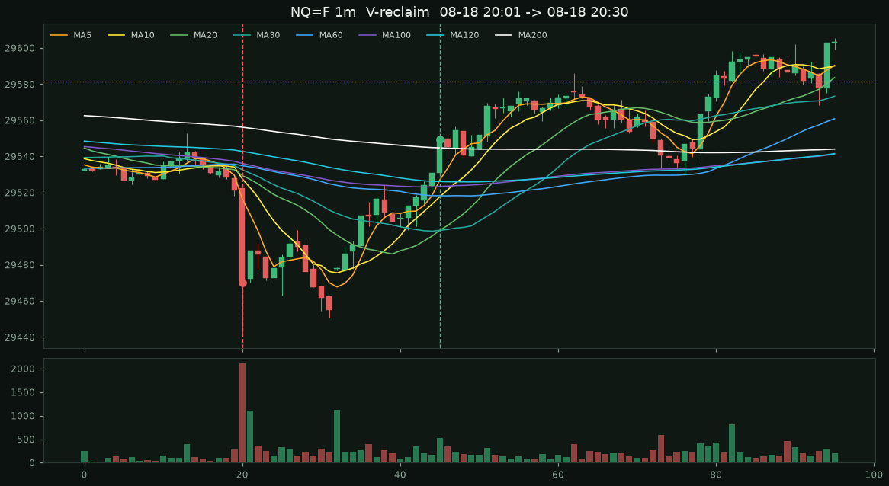

NQ 一分 K 急跌 V 反 · 近一週 1 筆訊號
NQ=F · 2026-08-11 ~ 2026-08-18（7 個交易日曆日） · 8097 根 1m
（2026-08-11 00:09 ~ 2026-08-18 22:45 ET）。
規則對齊截圖那根：爆量長陰打穿全部均線 → 90 分鐘內不破低、收回 70% → 收盤站回 MA5/10/20/30/60/100/120/200 且 MA5>MA10>MA20。
紅虛線是急跌，綠虛線是進場，金線是前收（16:00 ET）。
嚴格急跌
4
未破低收回 70%
1
站回均線+短均開花
1
條件梯子（同一週、同一份 1m）
| 急跌定義 | 急跌事件 | V 收回 70% | 站回全部均線 | 再加短均開花＝訊號 | 再過前收 |
|---|---|---|---|---|---|
| 嚴格（截圖：5×ATR 或 50 點、5×量、跌破全部均線） | 4 | 1 | 1 | 1 | 1 |
| 中等（3×ATR 或 25 點、3×量、跌破全部均線） | 17 | 2 | 2 | 2 | 2 |
| 寬鬆（2.5×ATR、2.5×量、僅跌破 MA20） | 35 | 3 | 3 | 3 | 3 |
寬鬆那 2 筆多出來的，多半是 08:30 美股開盤的寬幅 K，不是截圖那種 Globex 夜盤掃蕩。
訊號 08-18 20:30 · 急跌 08-18 20:01

急跌 81.0 點 · 量比 10.0× · ATR 7.5×
進場 29549.50 · 停損 29442.00 · 前收 29581.25 · 突破 08-18 21:05
進場後 15/30/60m：+23.2pt / -13.0pt / +18.2pt
嚴格急跌但沒走出 V
同一套急跌門檻，90 分鐘內又破了低點，不當訊號。
急跌未完成 V 08-11 09:30

急跌 71.2 點 · 量比 9.6× · ATR 5.5× · 90 分鐘內破了急跌低點
急跌未完成 V 08-12 06:48

急跌 41.8 點 · 量比 7.2× · ATR 7.4× · 90 分鐘內破了急跌低點
急跌未完成 V 08-17 08:26

急跌 52.0 點 · 量比 8.3× · ATR 5.2× · 90 分鐘內破了急跌低點